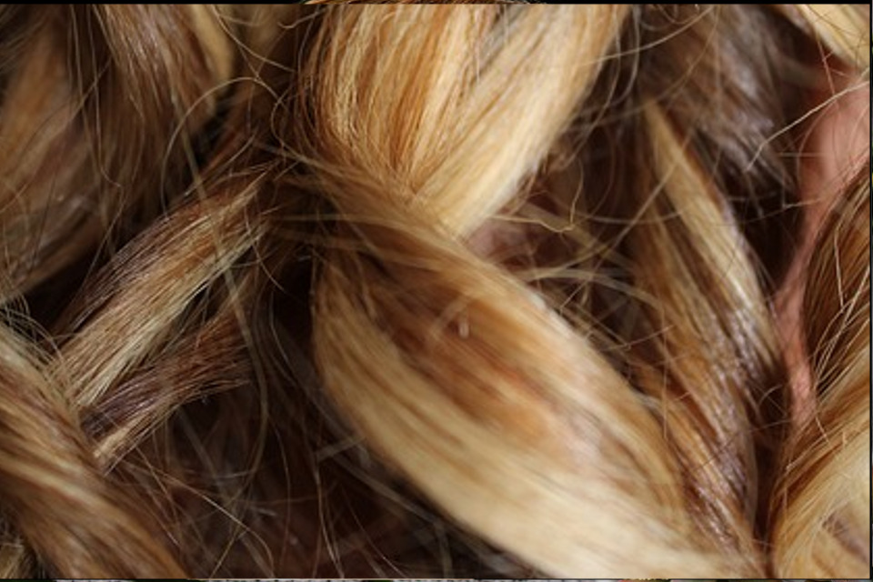

HDNC pour les cheveux
Une recette, trois usages différentes...
Mèlangez 2 c. à s. d'huile HDNC avec 2 gouttes d'huile de ricin. Utilisez cette préparation en trois façons differentes, selon vos besoins.
Un masque pour les pointes en plein forme
Humidifiez les cheveux avec l'eau tiède et appliquez le mélange d'huile HDNC avec l'huile de ricin, jusqu’à ce qu’ils soient complètement recouverts.
Laissez agir pendant minimum une heure, puis lavez vos cheveux comme d'habitude. Utilisez une fois par semaine.
Humidifiez les cheveux avec l'eau tiède et appliquez le mélange d'huile HDNC avec l'huile de ricin, jusqu’à ce qu’ils soient complètement recouverts.
Laissez agir pendant minimum une heure, puis lavez vos cheveux comme d'habitude. Utilisez une fois par semaine.

Pour les cheveux lisses
Ce mélange d'huile HDNC et d'huile de ricin est un produit de lissage trés efficasse
Prenez simplement une goutte et chauffez dans vos mains, ensuite appliquez sur tout la chevelure, sauf sur les racines.
Brossez, séchez et profitez des cheveux douces et lisses.
Ce mélange d'huile HDNC et d'huile de ricin est un produit de lissage trés efficasse
Prenez simplement une goutte et chauffez dans vos mains, ensuite appliquez sur tout la chevelure, sauf sur les racines.
Brossez, séchez et profitez des cheveux douces et lisses.

Pour discipliner les boucles
Prennez une goutte de ce mélange d'huile HDNC et d'huile de ricin. Chauffez dans vos mains et appliquez sur toute la chevelure sauf sur les racines.
Formez vos boucles et laissez sécher à l'air libre. Vos cheveux seront bien nourris, les boucles bien définis et disciplinés.
Prennez une goutte de ce mélange d'huile HDNC et d'huile de ricin. Chauffez dans vos mains et appliquez sur toute la chevelure sauf sur les racines.
Formez vos boucles et laissez sécher à l'air libre. Vos cheveux seront bien nourris, les boucles bien définis et disciplinés.